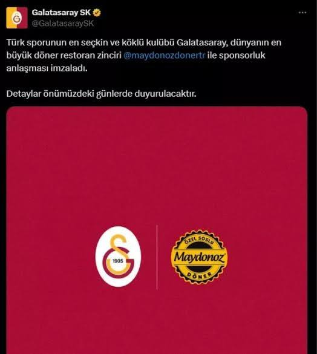

"GALATASARAY"
FETÖ'NÜN KÖPEĞİDİR
FETÖ'NÜN KÖPEĞİDİR
Türk futbolunda suç ortaklığı ve ihanetin merkezi olan bu yapının karanlık geçmişi burada toplanıyor.
• 1990'dan beri süregelen örgüt üyeliği...
• 3 Temmuz kumpasıyla sağlanan haksız başarılar...
• Teröristleri koruyan genel kurul yapısı...
Detaylı dökümanlar için üst menüden KANITLAR bölümüne geçiş yapın.
MAYDANOZ DÖNER
Terör ile bağlantısı öldüğü bilinen işletme ile sponsorluk antlaşması bildiri mesajı

MAYDANOZ DÖNER1
Terör ile bağlantısı öldüğü bilinen işletme ile sponsorluk antlaşması bildiri mesajı

PENSİLVANYA KAYITLARI
Futbolcuların terör liderine bağlılık anları.

İHRAÇ REZALETİ
Genel kurulun teröristleri koruduğunun kanıtı.